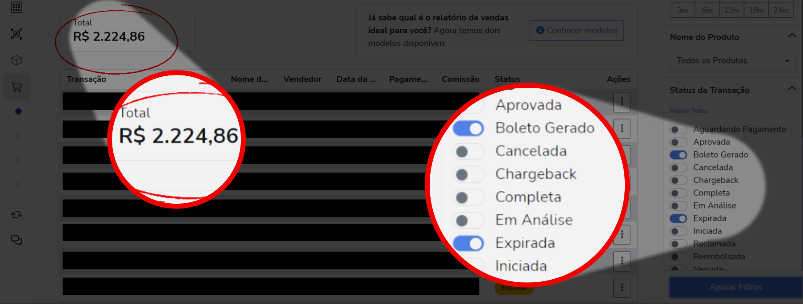

Você se frustra ao ver um e-mail de "boleto gerado" porque sabe que nem sempre as pessoas pagam?
Sente que poderia vender mais, mas não faz ideia de como converter esses boletos?
Você já sente que tanto faz ter boletos gerados, porque nunca se transformam em vendas realizadas?
E se eu te dissesse que isso está errado?
Boletos gerados são uma mina de ouro esperando que você escave para encontrar as pepitas - que estão mais fáceis do que você imagina.
Desde 2018, quando comecei no mercado digital, uma das minhas maiores frustrações era a notificação de que alguém gerou boleto para comprar o produto que eu vendia como afiliada.
No começo eu até criava expectativa, mas depois de um tempo acabei me conformando que não seriam pagos e fim de história...
E tudo isso em menos de 5 minutos.
Eu descobri que nem sempre as pessoas deixam de pagar por maldade, mas também porque, no meio de tantas obrigações do dia a dia, acabam se esquecendo.
A boa notícia é que existe uma estratégia a prova de falhas para recuperar esses boletos.
Antes de descobrir isso, eu já perdi mais de 2 mil reais em boletos que não foram pagos...
A pergunta é: até quando essa será a sua realidade também?
Criei este material justamente porque eu quero te ajudar a eliminar esse problema.
Seja você afiliado, produtor ou co-produtor: vai funcionar.
Filtrei aqui na minha conta os boletos gerados que expiraram, pra te mostrar quanto dinheiro você também pode estar deixando na mesa por não saber como converter:
Eu descobri que nem sempre as pessoas deixam de pagar por maldade, mas também porque, no meio de tantas obrigações do dia a dia, acabam se esquecendo.
Eu descobri que nem sempre as pessoas deixam de pagar por maldade, mas também porque, no meio de tantas obrigações do dia a dia, acabam se esquecendo.
Eu descobri que nem sempre as pessoas deixam de pagar por maldade, mas também porque, no meio de tantas obrigações do dia a dia, acabam se esquecendo.
Eu descobri que nem sempre as pessoas deixam de pagar por maldade, mas também porque, no meio de tantas obrigações do dia a dia, acabam se esquecendo.
Eu descobri que nem sempre as pessoas deixam de pagar por maldade, mas também porque, no meio de tantas obrigações do dia a dia, acabam se esquecendo.